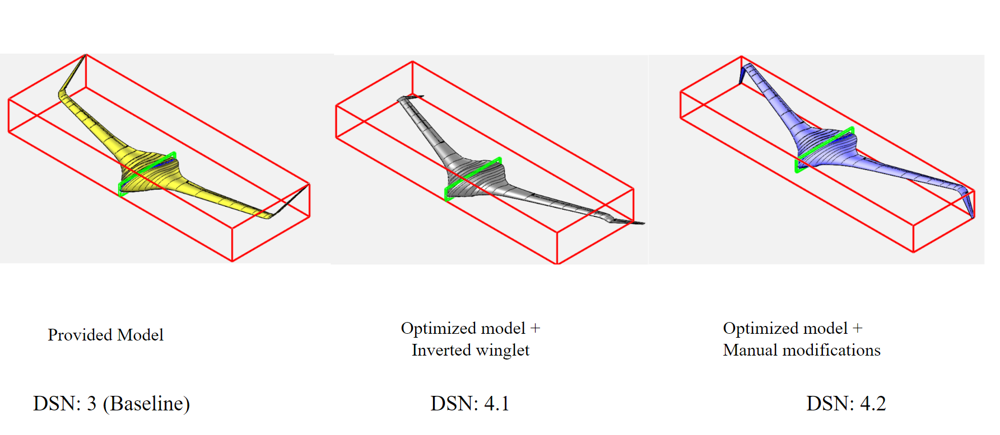
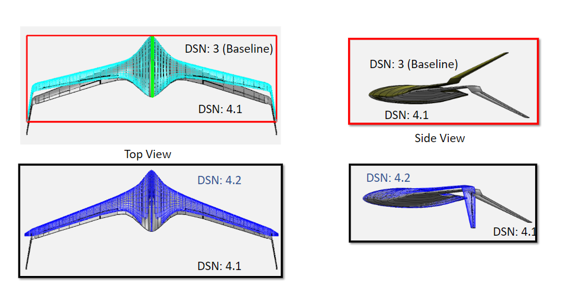
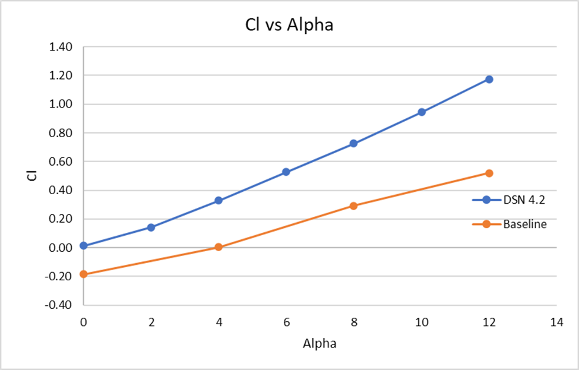
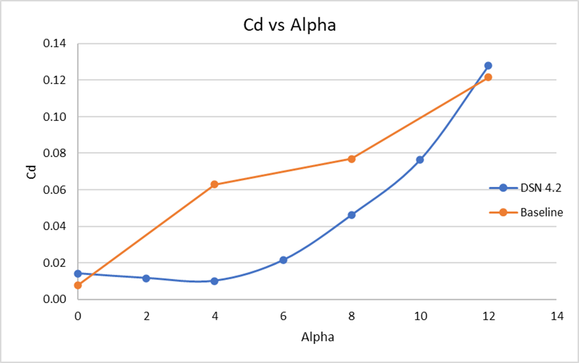
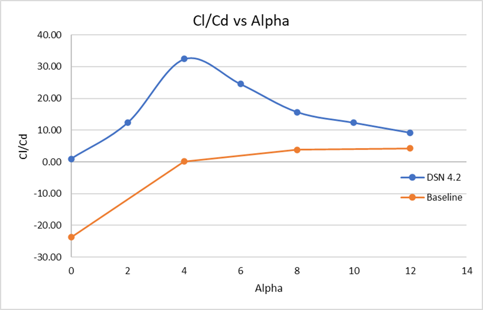
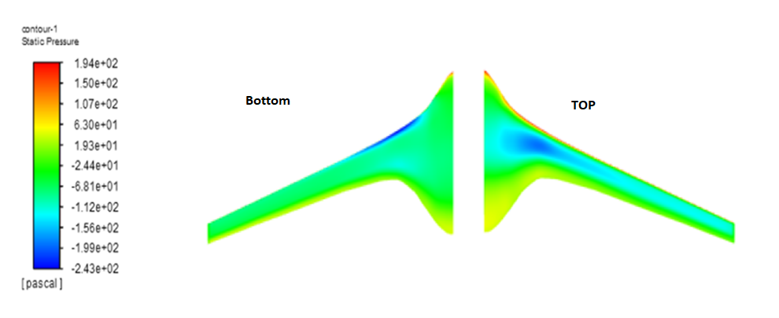
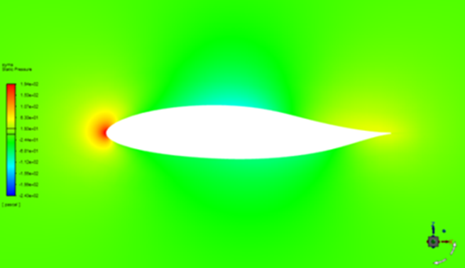
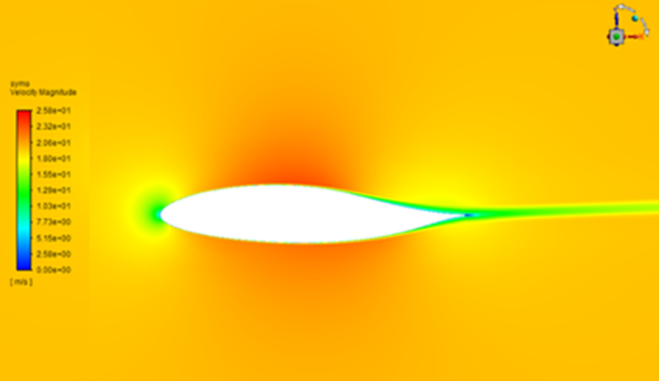

Optimization of Eagle Ray Blended Wing Body (BWB) UAV
Optimization Results: Isometric view
Optimization Results: Orthographic view
Optimization Results: Graphs



Contour Plot at zero degree angle of attack in the optimized model
Pressure Contour on Whole Body
Pressure Contour and velocity contour


Research Methodology
- Low-fidelity aerodynamic analysis was performed using XFLR5 and OpenVSP.
- Initially, gradient optimization was performed using SU2.
- Then non-gradient optimization was performed using Aeolus.
- High-fidelity aerodynamic analysis was done for the baseline and optimized model using ANSYS ICEM and Fluent.
- Comparison was done between the baseline model and optimized model.
Research Results
- Gradient-based optimization resulted in a 6% increment in lift/drag ratio.
- Non-gradient optimization resulted in a 23% increment in lift/drag ratio.
- Finally, some manual modifications were made based on literature, usability, and expert feedback which resulted in a 3% increment in lift/drag ratio.